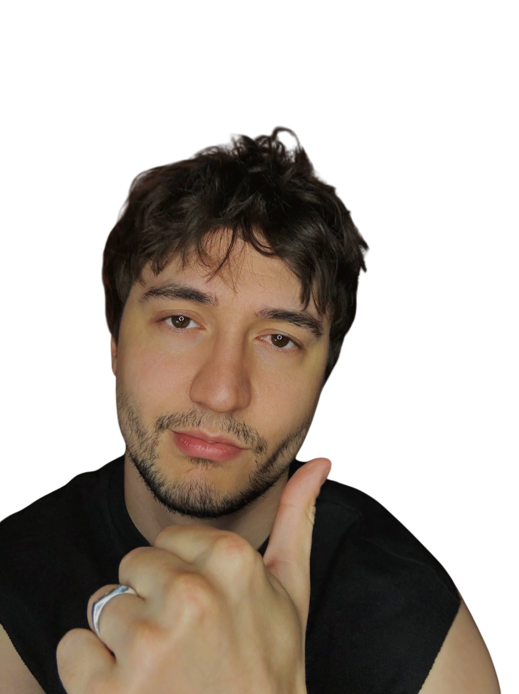
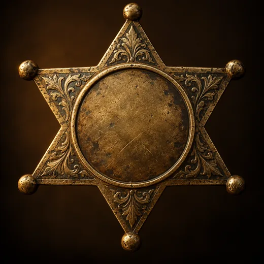
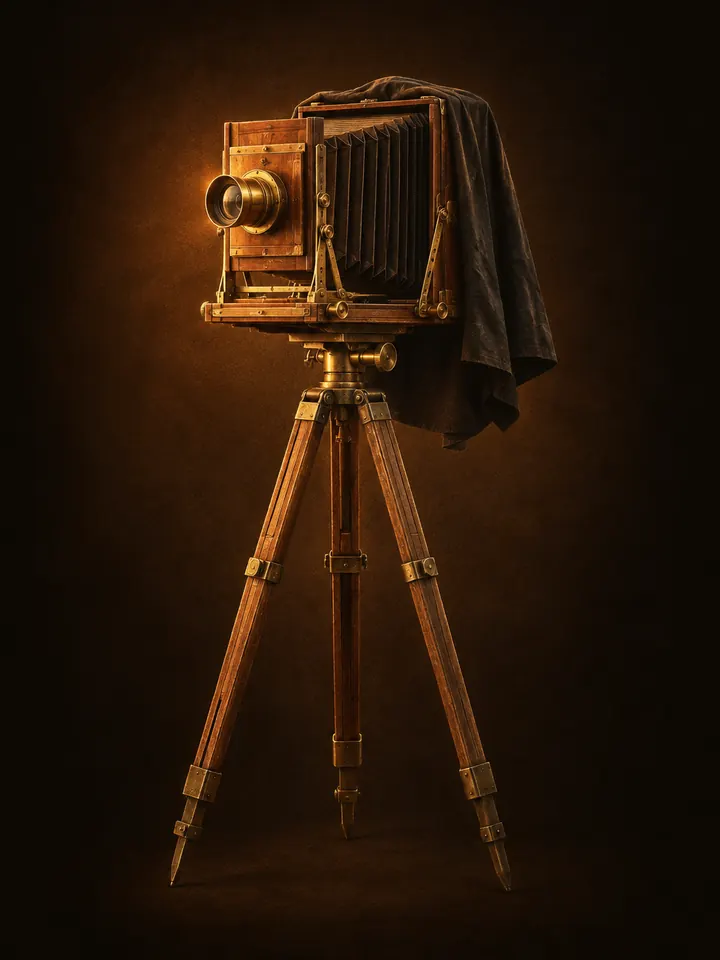

не веришь в себя? норм. я верю за двоих.
Тебе есть что сказать. Но голос внутри шепчет «не сейчас», и ты опять не снимаешь. Я этот голос знаю в лицо.
три продукта по 7 дней · проходишь сам, прямо в телеге

По 7 дней. Проходишь сам, прямо в телеге
Голос «не сейчас» держит тебя не только у камеры. Он же решает, что подумают свои, что подождет до понедельника и зачем вообще все это. В день одно короткое чтение и одно дело минут на 10.
Перед каждым шагом прикидываешь, что скажут свои: родня, коллеги, бывшие одноклассники. Новая куртка, ролик, увольнение, неважно что.
Важное дело лежит месяцами, а день уходит на мелочи и ленту. Разберешь, почему откладываешь именно его, и сдвинешь с места.
Работа, дом, лента, и непонятно, чего вообще хочется. Найдешь, что тебе правда нужно, без сказок про предназначение.
Голос «не сейчас» любой большой план откладывает до понедельника. С делом на 10 минут ему спорить не о чем, поэтому день тут маленький: прочитал, сделал одно дело, закрыл телефон.

| № | факт | вывод |
|---|---|---|
| 01 | МузыкантБиты уходили в Европу. Сырые. А вылизанные месяцами не услышал никто. | сырое побеждает |
| 02 | QA-инженерЛомаю софт за деньги. И вижу, где ломаешься ты. | найду, где течет |
| 03 | 33 собеседованияПрошел, чтобы попасть в IT. Знаю это «вроде готов, но страшно» изнутри. | страх знаком |
| 04 | Ушел из банкаВ никуда. Лучшая зарплата в жизни. И худший год. | голос тот же |
| 05 | Полгода удалялСнимал рилсы и стирал. Все. Теперь снимаю, выкладываю и учу ломать этот страх. | удаляльщик побежден |
Это не «лень» и не «нет времени». У голоса, который откладывает твои ролики, пять лиц. Узнал реплику? Узнал врага.
Может, еще что-то докрутить, потом выложим
А, пох*й, потом сделаю
А вдруг кто-то что-то скажет
А вдруг зря, вдруг не получится
Ну что, выложил? Теперь удаляй
Есть. «ИИ-Напарник»: помощник по рилсам, собранный на моем методе и в моем стиле. Знает пятерых поименно, разбирает начало ролика, страхи и цифры. В три ночи тоже отвечает. Первые 5 вопросов бесплатно. Это нейросеть, не живой я.
Сомневаешься? Нормально. Сомнение и есть тот голос, про который весь мой блог. Мне он стоил месяцев «подготовки» и полугода удаленных роликов.
Ты не обязан быть готовым. Ты обязан только начать.
P.S. 7 дней по 10 минут, все в телеге.